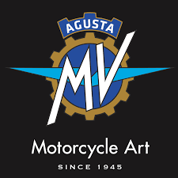
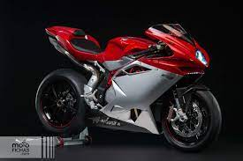
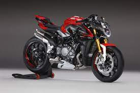
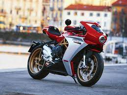

Origen de MV Agusta |
La empresa comenzó siendo una rama de la empresa de aviación Agusta que fue fundada por el Conde Giovanni Agusta en 1923. El Conde murió en 1927, dejando la compañía en las manos de su esposa y sus hijos Domenico, Vincenzo, Mario y Corrado. El conde Vincenzo Agusta junto con su hermano Domenico crearon MV Agusta (las iniciales MV significan Meccanica Verghera) al final de la II Guerra Mundial como un medio de salvar los puestos de trabajo de la empresa Agusta y también con el objetivo de cubrir las necesidades del mercado posterior a la guerra, que demandaba medios de transporte baratos y eficientes. Produjeron el primer prototipo que fue llamado "Vespa 98" en 1945. Después descubrieron que el nombre de Vespa ya había sido registrado por la empresa Piaggio para su scooter Vespa, así que el modelo pasó a denominarse exclusivamente por el número “98”.
750S.
Entre 1950 y 1970, la compañía fabricaba motos de pequeña cilindrada de estilo Cafe Racer (la mayoría de 125 a 150 cc). En la década de los 60, las ventas de motos pequeñas cayeron y MV Agusta empezó a producir menos motos pero de mayor cilindrada. Una 250 cc, y posteriormente una 350 cc de dos cilindros. Posteriormente una 600 cc de cuatro cilindros que evolucionó a una 750 cc que hoy en día es muy apreciada por los coleccionistas.
La empresa española Avello con sede en Natahoyo, cerca de Gijón, manufacturó motos bajo licencia de MV Agusta, con los nombres de MV Avello y MV Agusta. Én todas las motocilcetas fabricadas en Gijón, se puede ver un anagrama que pone Emeuve, que las hace inconfundible de las italianas.
A partir de la muerte del conde Domenico Agusta en 1971, la empresa entró en declive y en 1980 dejó de producir motocicleta |
MV Agusta en competicion |
Vincenzo y Domenico Agusta eran unos apasionados de la mecánica y de las carreras de motocicletas. Estaban determinados a tener el mejor equipo de mundo en el Campeonato del Mundo de Motociclismo y no repararon en gastos para conseguirlo. En 1948, la empresa construyó una motocicleta monocilíndrica de 125 cc y de dos tiempos e inscribió a Franco Bertoni en el Gran Premio de Italia de ese año. Bertoni ganó la carrera celebrada en el circuito de Monza e instantáneamente el nuevo fabricante de motocicletas saltó a la fama.
En la temporada de 1949, la categoría de 125 cc ganó prestigio. Más fabricantes de motocicletas participaban en las carreras inaugurales del Campeonato del Mundo celebradas en Suiza, Holanda e Italia. Las motocicletas Mondial de 125 cc DOHC dominaban la temporada. Los pilotos de MV Agusta terminaron noveno y décimo al final de la temporada. En 1950, Arturo Magni y Piero Remor se unieron a la empresa después de haber trabajado en Gilera. Magni era el jefe mecánico y Remor era el jefe de diseño.7 Las temporadas de 1950 y 1951 fueron años de desarrollo mientras la marca adoptaba el motor de cuatro tiempos de 125 cc DOHC. Los esfuerzos solo consiguieron una quinta plaza en el Gran Premio de los Países Bajos de 1950. La temporada de 1951 solo fue un poco mejor.
La temporada de 1952 vio la introducción en la moto de competición en 125 de horquillas telescópicas, frenos de aleación y depósito de combustible más estilizado. La potencia era de 15 CV a 10.800 rpm. El británico Cecil Sandford pilotó la nueva MV Agusta 125 en el TT Isla de Man y lo ganó, en esa temporada ganó dos Grandes Premios más e hizo otros dos terceros puestos, lo que le sirvió para ganar el Campeonato del Mundo de 125, que fue el primero para la compañía. En 1953 los ingenieros adoptaron la horquilla del tipo Earl para solucionar los problemas de manejabilidad. En la temporada de 1953 se introdujo la 350 tetracilíndrica. En esta temporada MV Agusta tenía motos en las categorías de 500 cc, 350 cc y 125 cc.
Tras el éxito de la temporada de 1952, los pilotos privados pudieron adquirir réplicas de la 125 DOHC. Esta réplica de las motos oficiales tenían muchas de los adelantos técnicos de las motos oficiales. Entre ellas, embrague multidisco, bomba mecánica de aceite, carburador Dell'Orto SS1 de 27mm y de flotador independiente. La moto se apodó “The Boy Racer”.
A mediados de los años 50 del siglo XX se introdujo la categoría de 175 cc. MV Agusta produjo la 175 CSS para uso en carretera y desarrolló una 175 cc de competición para pilotos privados. La 175 cc fue muy popular en Gran Bretaña. Pilotos como Michael O’Rourke, Derek Minter y Bob Keeler compitieron en carreras de 175 y 125 por toda Europa con gran éxito. El lema de marketing “compitiendo el domingo, a la venta el lunes” fue utilizado. En las motos de competición, las primeras MV Agusta tenían el lateral del cárter desmontable para poder acceder fácilmente a la caja de cambios.
La naturaleza competitiva del conde Agusta, hizo que soliese fichar a los mejores pilotos de la época para llevar sus motocicletas. entre ellos se podrían destacar; Carlo Ubbiali, John Surtees, Mike Hailwood, Giacomo Agostini, Phil Read, y otros. A la vez también tenía los mejores ingenieros, entre los que destacó Arturo Magni. Las motos de competición de tres y cuatro cilindros fueron famosas por su buen comportamiento y rendimiento. Las motos solían ir pintadas de color rojo y plata, siendo un sello de calidad en las décadas de los 60 y 70 del siglo XX, ganando de modo consecutivo 17 Campeonatos del Mundo de 500 cc, y un total de 63 Campeonatos del Mundo en todas las categorías. Tras la muerte del conde Domenico Agusta en 1971, la marca perdió su empuje. MV Agusta ganó su último Gran Premio en 1976, abandonando las carreras en 1980. A este abandono también contribuyó la entrada en escena de las motos japonesas (Honda, Yamaha, Suzuki y Kawasaki) de dos tiempos que en un breve espacio de tiempo consiguieron superar a las cuatro tiempos de MV Agusta.
Entre 1948 y 1976, MV Agusta ganó más de 3.000 carreras. Después de que la empresa abandonase la competición en 1980, Arturo Magni produjo sus propios chasis a los que acopló motores MV Agusta |
 |
 |
 |
 |
 |